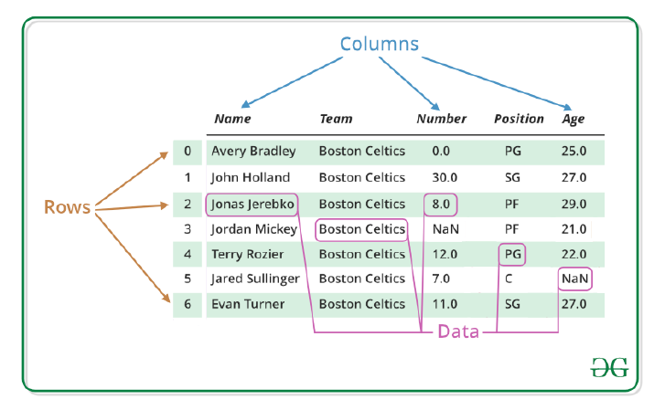
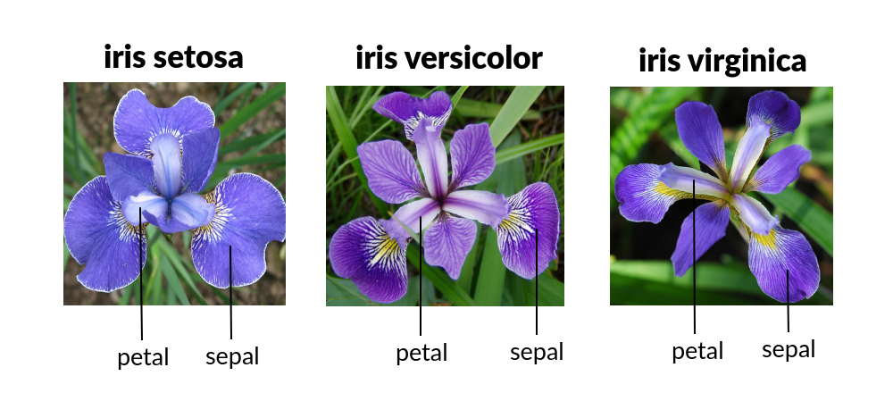

v <- c(1.1, 10, 3.14)Introducción a R
Clase 3
Introducción
Vectores
- Elemento más básico en R.
- Contiene elementos de la misma clase.
- Se crea con la función
c().
c(v, 555, v)[1] 1.10 10.00 3.14 555.00 1.10 10.00 3.14Operaciones con vectores
a <- 10
a[1] 10v * 2 + 100[1] 102.20 120.00 106.28b <- c(2, 4, 6, 8, 10) # vector numérico
texto <- c("esto", "eso", "lo otro") # ⚠️ evitar usar "c" como nombre
d <- c(1, 2, "esto") # coerción a character
d[1] "1" "2" "esto"lista_persona <- list(list(name = "Max White", age = 27, hobbies = c("Programming, movies")), list(name = "Mia Black", age = 32, hobbies = c("Theater, computer games")), list(name = "Mika Brown", age =23, hobbies = c("Sports, music")))
lista_persona[[2]][[3]][1] "Theater, computer games"Matrices y Data Frames
Ambos representan tipos de datos “rectangulares”, lo que significa que se usan para almacenar datos tabulares, con filas y columnas.
La principal diferencia, es que las matrices solo pueden contener una única clase de datos (al igual que los vectores), mientras que los data frames pueden consistir en muchas clases diferentes de datos.
Matrices
mi_vector <- 1:20
mi_vector [1] 1 2 3 4 5 6 7 8 9 10 11 12 13 14 15 16 17 18 19 20dim(mi_vector)NULLDado que la variable es un vector, no tiene un atributo dim (entonces es simplemente NULL).
¿Qué ocurre si le damos a mi_vector un atributo dim?
dim(mi_vector) <- c(4, 5)
mi_vector [,1] [,2] [,3] [,4] [,5]
[1,] 1 5 9 13 17
[2,] 2 6 10 14 18
[3,] 3 7 11 15 19
[4,] 4 8 12 16 20class(mi_vector)[1] "matrix" "array" Una matriz es simplemente un vector con un atributo de dimensión.
Para crear la misma matriz utiliza la función matrix.
mat <- matrix(1:20, nrow = 5, ncol = 4)
mat [,1] [,2] [,3] [,4]
[1,] 1 6 11 16
[2,] 2 7 12 17
[3,] 3 8 13 18
[4,] 4 9 14 19
[5,] 5 10 15 20mi_matriz2 <- matrix(1:20, 4, 5)
mi_matriz2 [,1] [,2] [,3] [,4] [,5]
[1,] 1 5 9 13 17
[2,] 2 6 10 14 18
[3,] 3 7 11 15 19
[4,] 4 8 12 16 20Data Frames
Un data frame es una estructura de datos bidimensional similar a una matriz, pero funciona de manera muy diferente. Si bien un data frame parece una tabla simple, de hecho es una lista de vectores de la misma longitud.
La principal diferencia es que un data frame permite tipos de datos mixtos (por ejemplo, numérico, lógico, caracter).
Esto les permite almacenar diferentes tipos de variables, lo cual es muy útil en el análisis estadístico.
mi_df <- data.frame(
"entero" = 1:4,
"factor" = c("a", "b", "c", "d"),
"numero" = c(1.2, 3.4, 4.5, 5.6),
"cadena" = as.character(c("a", "b", "c", "d"))
)
mi_df entero factor numero cadena
1 1 a 1.2 a
2 2 b 3.4 b
3 3 c 4.5 c
4 4 d 5.6 d# Podemos usar dim() en un data frame
dim(mi_df)[1] 4 4# El largo de un data frame es igual a su número de columnas
length(mi_df)[1] 4# names() nos permite ver los nombres de las columnas
names(mi_df)[1] "entero" "factor" "numero" "cadena"Si los vectores que usamos para construir el data frame no son del mismo largo, los datos no se reciclaran. Se nos devolverá un error.
data.frame(
"entero" = 1:3,
"factor" = c("a", "b", "c", "d"),
"numero" = c(1.2, 3.4, 4.5, 5.6),
"cadena" = as.character(c("a", "b", "c", "d"))
)Propiedades de un data frame
Al igual que con una matriz, si aplicamos una operación aritmética a un data frame, esta se vectorizará.
Los resultados que obtendremos dependerán del tipo de datos de cada columna. R nos devolverá todas las advertencias que ocurran como resultado de las operaciones realizadas.
mi_df <- data.frame(
"entero" = 1:4,
"factor" = c("a", "b", "c", "d"),
"numero" = c(1.2, 3.4, 4.5, 5.6),
"cadena" = as.character(c("a", "b", "c", "d"))
)
mi_df$numero * 2[1] 2.4 6.8 9.0 11.2Data frame

Desafío
Crea un dataframe con la información de gatos, que contega las siguientes columnas color,peso,le_gusta_cuerda(1,0)
Respuesta
gatos <- data.frame(color = c("mixto", "negro", "atigrado"), peso = c(2.1, 5.0, 3.2),le_gusta_cuerda = c(1, 0, 1))
gatos color peso le_gusta_cuerda
1 mixto 2.1 1
2 negro 5.0 0
3 atigrado 3.2 1Función data.frame
mi_df <- data.frame(
"Edad" = c(35,29,21,40),
"Ejercicio" = c(TRUE, FALSE, TRUE, FALSE),
"Pais" = as.character(c("Malta", "Francia", "Colombia","España"))
)
mi_df Edad Ejercicio Pais
1 35 TRUE Malta
2 29 FALSE Francia
3 21 TRUE Colombia
4 40 FALSE EspañaData frame
datos <- edit(data.frame()) # Abre un editor para introducir los datos datos
Se puede acceder a los datos de un data frame como se hace con una matriz,especificando las filas y columnas con la siguiente sintaxis:
mi_df[renglones, columnas]
índices positivos y negativos cadenas de caracteres valores lógicos
mi_df[c(1, 3), ] # Índices positivos: renglones 1 y 3 Edad Ejercicio Pais
1 35 TRUE Malta
3 21 TRUE ColombiaAcceso a los elementos con formato matriz
mi_df[, -2] # Índices negativos: excluir columna 2 Edad Pais
1 35 Malta
2 29 Francia
3 21 Colombia
4 40 Españami_df[, c("Ejercicio", "Edad")] # cadenas de caracteres Ejercicio Edad
1 TRUE 35
2 FALSE 29
3 TRUE 21
4 FALSE 40mi_df[mi_df[, "Ejercicio"] == TRUE, ] # valores lógicos Edad Ejercicio Pais
1 35 TRUE Malta
3 21 TRUE Colombia#Observa que si se deja en blanco la parte de filas o columnas se seleccionan todos los elementos de la dimensiónAcceso a los elementos con formato lista
Un data frame se implementa como una lista cuyos componentes son las columnas del data frame. Esto permite acceder con formato de lista para seleccionar las columnas,los operadores de acceso a lista son: [], [[]] y $.
mi_df[1:2] # primeras 2 columnas Edad Ejercicio
1 35 TRUE
2 29 FALSE
3 21 TRUE
4 40 FALSEmi_df[c("Ejercicio", "Edad")] # columnas de nombres: Ejercicio y Edad Ejercicio Edad
1 TRUE 35
2 FALSE 29
3 TRUE 21
4 FALSE 40mean(mi_df[[1]]) # Media de la columna 1[1] 31.25mean(mi_df[["Edad"]]) # Media de la columna Edad[1] 31.25Por último, el operador $ se utiliza para acceder al contenido de una columna mediante su nombre.
mi_df$Pais[1] "Malta" "Francia" "Colombia" "España" mi_df[mi_df$Ejercicio,]# Muestra sólo las personas que hacen Ejercicio Edad Ejercicio Pais
1 35 TRUE Malta
3 21 TRUE Colombia##Trabajando con data frames Las posibilidades de procesamiento de un data frame son enormes
#Podemos usar dim() en un data frame
dim(mi_df)[1] 4 3# El largo de un data frame es igual a su número de columnas
length(mi_df)[1] 3# names() nos permite ver los nombres de las columnas
names(mi_df)[1] "Edad" "Ejercicio" "Pais" rownames(mi_df) # nombres de los renglones[1] "1" "2" "3" "4"Las funciones str y summary (funciones genéricas aplicables a distintos objetos, no solo a data frames) nos dan información sobre un data frame:
str(mi_df)'data.frame': 4 obs. of 3 variables:
$ Edad : num 35 29 21 40
$ Ejercicio: logi TRUE FALSE TRUE FALSE
$ Pais : chr "Malta" "Francia" "Colombia" "España"summary(mi_df) Edad Ejercicio Pais
Min. :21.00 Mode :logical Length:4
1st Qu.:27.00 FALSE:2 Class :character
Median :32.00 TRUE :2 Mode :character
Mean :31.25
3rd Qu.:36.25
Max. :40.00 ##Modificación de un data frame
rownames(mi_df) <- c("Primero", "Segundo", "Tercero","Cuarto") #Modificamos el nombre de los renglones
mi_df Edad Ejercicio Pais
Primero 35 TRUE Malta
Segundo 29 FALSE Francia
Tercero 21 TRUE Colombia
Cuarto 40 FALSE Españami_df[3, 2] <- FALSE
mi_df Edad Ejercicio Pais
Primero 35 TRUE Malta
Segundo 29 FALSE Francia
Tercero 21 FALSE Colombia
Cuarto 40 FALSE EspañaEs posible también añadir o eliminar nuevas filas y columnas de diferentes formas. Veamos algunos ejemplos:
mi_df$Peso <- c(81,85,70,82) # se añade una columna de peso
mi_df Edad Ejercicio Pais Peso
Primero 35 TRUE Malta 81
Segundo 29 FALSE Francia 85
Tercero 21 FALSE Colombia 70
Cuarto 40 FALSE España 82quinto_dato <- data.frame(Edad = 25, Ejercicio = TRUE, Pais = "Argentina", Peso = 67)
mi_df <- rbind(mi_df, quinto_dato) # se añade una fila
mi_df Edad Ejercicio Pais Peso
Primero 35 TRUE Malta 81
Segundo 29 FALSE Francia 85
Tercero 21 FALSE Colombia 70
Cuarto 40 FALSE España 82
1 25 TRUE Argentina 67#Las funciones cbind y rbind permiten concatenar data frames horizontal y vertical.##read.table() La función read.table tiene muchas funciones
?read.table - file #El nombre del archivo o conexión - header #De tipo lógico indicando si el archivo contiene una línia de cabecera - sep #Una cadena indicando como están separadas las columnas - col.names # Vector de nombres - row.names # Número o vector de nombres - comment.char # Símbolo para comentarios
En donde esta nuestra tabla - getwd() #Imprime la dirección de trabajo - setwd() #Cambiar la dirección de trabajo
getwd()[1] "C:/Users/aimar/Documents/linda-aimara-kempis-calanis.github.io/pagina_web-main/teoria/02_unidad"Tabla_GDE <- read.table("Tabla/Tabla_GDE.txt",header = TRUE,sep ="\t")
View(Tabla_GDE)
filtrados <- read.table("Tabla/filtrados.txt",header = TRUE,sep ="\t")
View(filtrados)
filtrados2 <- read.table("Tabla/filtrados.txt",sep ="\t")
View(filtrados2)
filtrados3 <- read.table("Tabla/filtrados.txt",header=TRUE)
View(filtrados3)##Como guardar un archivo .txt
write.table(mi_df, file="mi_dataframe.txt", sep="\t", col.names = TRUE)
mi_df_2 <- read.table("mi_dataframe.txt")
View(mi_df_2)Factores
Un factor en R es una estructura de datos utilizada para representar un vector como datos categóricos.
El objeto factor toma un número acotado de diferentes valores llamados niveles. Los factores son muy útiles cuando se trabaja con columnas de caracteres de data frames, para crear gráficos de barras y crear resúmenes estadísticos de variables categóricas.
dias <- c("Viernes", "Martes", "Jueves", "Lunes", "Miércoles", "Lunes",
"Miércoles", "Lunes", "Lunes", "Miércoles", "Domingo", "Sábado")
# Niveles en orden alfabético
mi_factor <- factor(dias)
mi_factor [1] Viernes Martes Jueves Lunes Miércoles Lunes Miércoles
[8] Lunes Lunes Miércoles Domingo Sábado
Levels: Domingo Jueves Lunes Martes Miércoles Sábado ViernesFactores
Se pueden devolver y convertir los niveles de los factores en caracteres con la función levels.
levels(mi_factor)[1] "Domingo" "Jueves" "Lunes" "Martes" "Miércoles" "Sábado"
[7] "Viernes" Supongamos ahora que has registrado el municipio de seis personas con la siguiente codificación:
- 1: Cuernavaca.
- 2: Cuautla,
- 3: Jiutepec.
- 4: Yautepec. Por lo tanto, tendrás datos almacenados en un vector numérico como los siguientes:
municipio <- c(1,4,3,2)Factores
Ahora puedes llamar a la función factor para convertir y obtener los datos categorizados para su posterior análisis.
mi_factor_municipio <- factor(municipio)
mi_factor_municipio[1] 1 4 3 2
Levels: 1 2 3 4Si el vector de entrada es numérico, la etiqueta correspondiente (el municipio) no queda reflejada. Para resolver este problema, puedes almacenar los datos en un objeto de tipo factor utilizando la función factor e indicar las etiquetas correspondientes de los niveles en el argumento labels y así cambiar el nombre de los niveles del factor.
# Especificando las etiquetas en el orden correspondiente
factor_municipios_nacimiento <- factor(municipio, labels = c("Cuernavaca", "Cuautla","Jiutepec", "Yautepec"))
# Imprimir el resultado
factor_municipios_nacimiento[1] Cuernavaca Yautepec Jiutepec Cuautla
Levels: Cuernavaca Cuautla Jiutepec YautepecConjunto de datos en R
Varios conjuntos de datos tabulados o data sets se icluyen en la instalación de R (en el paquete datasets) y por defecto se ecuentran cargados para su uso. la funcion data() lista todos los data sets de R.
Trabajemos con el data set “iris” (Edgar Anderson’s Iris Data)
str(iris)'data.frame': 150 obs. of 5 variables:
$ Sepal.Length: num 5.1 4.9 4.7 4.6 5 5.4 4.6 5 4.4 4.9 ...
$ Sepal.Width : num 3.5 3 3.2 3.1 3.6 3.9 3.4 3.4 2.9 3.1 ...
$ Petal.Length: num 1.4 1.4 1.3 1.5 1.4 1.7 1.4 1.5 1.4 1.5 ...
$ Petal.Width : num 0.2 0.2 0.2 0.2 0.2 0.4 0.3 0.2 0.2 0.1 ...
$ Species : Factor w/ 3 levels "setosa","versicolor",..: 1 1 1 1 1 1 1 1 1 1 ...
iris[, "Species"] # todas las observaciones de la columna 'Species' [1] setosa setosa setosa setosa setosa setosa
[7] setosa setosa setosa setosa setosa setosa
[13] setosa setosa setosa setosa setosa setosa
[19] setosa setosa setosa setosa setosa setosa
[25] setosa setosa setosa setosa setosa setosa
[31] setosa setosa setosa setosa setosa setosa
[37] setosa setosa setosa setosa setosa setosa
[43] setosa setosa setosa setosa setosa setosa
[49] setosa setosa versicolor versicolor versicolor versicolor
[55] versicolor versicolor versicolor versicolor versicolor versicolor
[61] versicolor versicolor versicolor versicolor versicolor versicolor
[67] versicolor versicolor versicolor versicolor versicolor versicolor
[73] versicolor versicolor versicolor versicolor versicolor versicolor
[79] versicolor versicolor versicolor versicolor versicolor versicolor
[85] versicolor versicolor versicolor versicolor versicolor versicolor
[91] versicolor versicolor versicolor versicolor versicolor versicolor
[97] versicolor versicolor versicolor versicolor virginica virginica
[103] virginica virginica virginica virginica virginica virginica
[109] virginica virginica virginica virginica virginica virginica
[115] virginica virginica virginica virginica virginica virginica
[121] virginica virginica virginica virginica virginica virginica
[127] virginica virginica virginica virginica virginica virginica
[133] virginica virginica virginica virginica virginica virginica
[139] virginica virginica virginica virginica virginica virginica
[145] virginica virginica virginica virginica virginica virginica
Levels: setosa versicolor virginicairis$Species # Lo mismo. [1] setosa setosa setosa setosa setosa setosa
[7] setosa setosa setosa setosa setosa setosa
[13] setosa setosa setosa setosa setosa setosa
[19] setosa setosa setosa setosa setosa setosa
[25] setosa setosa setosa setosa setosa setosa
[31] setosa setosa setosa setosa setosa setosa
[37] setosa setosa setosa setosa setosa setosa
[43] setosa setosa setosa setosa setosa setosa
[49] setosa setosa versicolor versicolor versicolor versicolor
[55] versicolor versicolor versicolor versicolor versicolor versicolor
[61] versicolor versicolor versicolor versicolor versicolor versicolor
[67] versicolor versicolor versicolor versicolor versicolor versicolor
[73] versicolor versicolor versicolor versicolor versicolor versicolor
[79] versicolor versicolor versicolor versicolor versicolor versicolor
[85] versicolor versicolor versicolor versicolor versicolor versicolor
[91] versicolor versicolor versicolor versicolor versicolor versicolor
[97] versicolor versicolor versicolor versicolor virginica virginica
[103] virginica virginica virginica virginica virginica virginica
[109] virginica virginica virginica virginica virginica virginica
[115] virginica virginica virginica virginica virginica virginica
[121] virginica virginica virginica virginica virginica virginica
[127] virginica virginica virginica virginica virginica virginica
[133] virginica virginica virginica virginica virginica virginica
[139] virginica virginica virginica virginica virginica virginica
[145] virginica virginica virginica virginica virginica virginica
Levels: setosa versicolor virginicaCuando queremos extraer datos del data frame según una condicion, esto se complica.
#iris[iris[,"Species"]=="setosa", ]
iris[iris$Species=="setosa", ] Sepal.Length Sepal.Width Petal.Length Petal.Width Species
1 5.1 3.5 1.4 0.2 setosa
2 4.9 3.0 1.4 0.2 setosa
3 4.7 3.2 1.3 0.2 setosa
4 4.6 3.1 1.5 0.2 setosa
5 5.0 3.6 1.4 0.2 setosa
6 5.4 3.9 1.7 0.4 setosa
7 4.6 3.4 1.4 0.3 setosa
8 5.0 3.4 1.5 0.2 setosa
9 4.4 2.9 1.4 0.2 setosa
10 4.9 3.1 1.5 0.1 setosa
11 5.4 3.7 1.5 0.2 setosa
12 4.8 3.4 1.6 0.2 setosa
13 4.8 3.0 1.4 0.1 setosa
14 4.3 3.0 1.1 0.1 setosa
15 5.8 4.0 1.2 0.2 setosa
16 5.7 4.4 1.5 0.4 setosa
17 5.4 3.9 1.3 0.4 setosa
18 5.1 3.5 1.4 0.3 setosa
19 5.7 3.8 1.7 0.3 setosa
20 5.1 3.8 1.5 0.3 setosa
21 5.4 3.4 1.7 0.2 setosa
22 5.1 3.7 1.5 0.4 setosa
23 4.6 3.6 1.0 0.2 setosa
24 5.1 3.3 1.7 0.5 setosa
25 4.8 3.4 1.9 0.2 setosa
26 5.0 3.0 1.6 0.2 setosa
27 5.0 3.4 1.6 0.4 setosa
28 5.2 3.5 1.5 0.2 setosa
29 5.2 3.4 1.4 0.2 setosa
30 4.7 3.2 1.6 0.2 setosa
31 4.8 3.1 1.6 0.2 setosa
32 5.4 3.4 1.5 0.4 setosa
33 5.2 4.1 1.5 0.1 setosa
34 5.5 4.2 1.4 0.2 setosa
35 4.9 3.1 1.5 0.2 setosa
36 5.0 3.2 1.2 0.2 setosa
37 5.5 3.5 1.3 0.2 setosa
38 4.9 3.6 1.4 0.1 setosa
39 4.4 3.0 1.3 0.2 setosa
40 5.1 3.4 1.5 0.2 setosa
41 5.0 3.5 1.3 0.3 setosa
42 4.5 2.3 1.3 0.3 setosa
43 4.4 3.2 1.3 0.2 setosa
44 5.0 3.5 1.6 0.6 setosa
45 5.1 3.8 1.9 0.4 setosa
46 4.8 3.0 1.4 0.3 setosa
47 5.1 3.8 1.6 0.2 setosa
48 4.6 3.2 1.4 0.2 setosa
49 5.3 3.7 1.5 0.2 setosa
50 5.0 3.3 1.4 0.2 setosaAsí mismo, si se desea obtener las observaciones donde el ancho del sépalo sea menor a 3 y la especie sea “setosa”.
iris[iris[,"Sepal.Width"]<=3 & iris[,"Species"]=="setosa", ] Sepal.Length Sepal.Width Petal.Length Petal.Width Species
2 4.9 3.0 1.4 0.2 setosa
9 4.4 2.9 1.4 0.2 setosa
13 4.8 3.0 1.4 0.1 setosa
14 4.3 3.0 1.1 0.1 setosa
26 5.0 3.0 1.6 0.2 setosa
39 4.4 3.0 1.3 0.2 setosa
42 4.5 2.3 1.3 0.3 setosa
46 4.8 3.0 1.4 0.3 setosaSubsetting
La función subset nos facilita el recuperar datos cuando queremos que se cumplan ciertas condiciones.
subset(iris, Sepal.Width <= 3 & Species == "setosa") Sepal.Length Sepal.Width Petal.Length Petal.Width Species
2 4.9 3.0 1.4 0.2 setosa
9 4.4 2.9 1.4 0.2 setosa
13 4.8 3.0 1.4 0.1 setosa
14 4.3 3.0 1.1 0.1 setosa
26 5.0 3.0 1.6 0.2 setosa
39 4.4 3.0 1.3 0.2 setosa
42 4.5 2.3 1.3 0.3 setosa
46 4.8 3.0 1.4 0.3 setosaDesafío
Del data set iris recupera los datos de iris, seleciona la especie versicolor que tenga una longitud mayor o igualde 4.2
Respuesta
iris[iris[,"Petal.Length"]>=4.2 & iris[,"Species"]=="versicolor",] Sepal.Length Sepal.Width Petal.Length Petal.Width Species
51 7.0 3.2 4.7 1.4 versicolor
52 6.4 3.2 4.5 1.5 versicolor
53 6.9 3.1 4.9 1.5 versicolor
55 6.5 2.8 4.6 1.5 versicolor
56 5.7 2.8 4.5 1.3 versicolor
57 6.3 3.3 4.7 1.6 versicolor
59 6.6 2.9 4.6 1.3 versicolor
62 5.9 3.0 4.2 1.5 versicolor
64 6.1 2.9 4.7 1.4 versicolor
66 6.7 3.1 4.4 1.4 versicolor
67 5.6 3.0 4.5 1.5 versicolor
69 6.2 2.2 4.5 1.5 versicolor
71 5.9 3.2 4.8 1.8 versicolor
73 6.3 2.5 4.9 1.5 versicolor
74 6.1 2.8 4.7 1.2 versicolor
75 6.4 2.9 4.3 1.3 versicolor
76 6.6 3.0 4.4 1.4 versicolor
77 6.8 2.8 4.8 1.4 versicolor
78 6.7 3.0 5.0 1.7 versicolor
79 6.0 2.9 4.5 1.5 versicolor
84 6.0 2.7 5.1 1.6 versicolor
85 5.4 3.0 4.5 1.5 versicolor
86 6.0 3.4 4.5 1.6 versicolor
87 6.7 3.1 4.7 1.5 versicolor
88 6.3 2.3 4.4 1.3 versicolor
91 5.5 2.6 4.4 1.2 versicolor
92 6.1 3.0 4.6 1.4 versicolor
95 5.6 2.7 4.2 1.3 versicolor
96 5.7 3.0 4.2 1.2 versicolor
97 5.7 2.9 4.2 1.3 versicolor
98 6.2 2.9 4.3 1.3 versicolorversicolor <- subset(iris, Petal.Length >= 4.2 & Species == "versicolor")Leyendo archivos de datos (delimitados)
- x<-read.table(“ZAS.txt”, sep= ” ” ) # Por espacios
- x<-read.table(“ZAS.txt”, sep= “ ) # Por tabulaciones
- x<-read.csv(“ZAS.csv” ) # Por comas
- X<-read.delim(“ZAS.txt” ) #Lee tablas
Exportar dataframes o matrices desde R.
write.table(x, file, sep = " ", row.names = TRUE, col.names = TRUE)write.csv(versicolor, file = "Resultados/my_data.csv")
write.table(versicolor,file="Resultados/my_data.txt")